Using Samba
Robert Eckstein, David Collier-Brown, Peter Kelly1st Edition November 1999
1-56592-449-5, Order Number: 4495
416 pages, $34.95
|
|
Using SambaRobert Eckstein, David Collier-Brown, Peter Kelly1st Edition November 1999 1-56592-449-5, Order Number: 4495 416 pages, $34.95 |
 | Chapter 3 |
 |
3. Configuring Windows Clients
Contents:
Setting Up Windows 95/98 Computers
Setting Up Windows NT 4.0 Computers
An Introduction to SMB/CIFS
You'll be glad to know that configuring Windows to use your new Samba server is quite simple. SMB is Microsoft's native language for resource sharing on a local area network, so much of the installation and setup on the Windows client side has been taken care of already. The primary issues that we will cover in this chapter involve communication and coordination between Windows and Unix, two completely different operating systems.
Samba uses TCP/IP to talk to its clients on the network. If you aren't already using TCP/IP on your Windows computers, this chapter will show you how to install it. Then you'll need to configure your Windows machines to operate on a TCP/IP network. Once these two requirements have been taken care of, we can show how to access a shared disk on the Samba server.
This chapter is divided into three sections. The first section covers setting up Windows 95/98 computers while the second covers Windows NT 4.0 machines. The final section provides some prerequisite information on how SMB connections are made from Windows clients and servers, which is useful as we move into the later chapters of the book.
3.1 Setting Up Windows 95/98 Computers
Unfortunately, Windows 95/98 wasn't designed for a PC to have more than one user; that concept is more inherent to a Unix operating system or Windows NT. However, Windows 95/98 does have limited support for multiple users: if you tell it, the operating system will keep a separate profile (desktop layout) and password file for each user. This is a far cry from true multiuser security. In other words, Windows 95/98 won't try to keep one user from destroying the work of another on the local hard drive like Unix, but profiles are a place to start.
3.1.1 Accounts and Passwords
The first thing we need to do is to tell Windows to keep user profiles separate, and to collect usernames and passwords to authenticate anyone trying to access a Samba share. We do so via the Password settings in the Control Panel. If you are not familiar with the Windows Control Panel, you can access it by choosing the Settings menu item from the pop-up menu of the Start button in the lower-left corner of the screen. Alternatively, you'll find it as a folder under the icon in the upper-left corner that represents your computer and is typically labeled My Computer.
After selecting the Passwords icon in the Control Panel, click on the User Profiles tab on the far right. You should see the dialog box shown in Figure 3.1. Then click the lower of the two radio buttons that starts "Users can customize their preferences...." This causes Windows to store a separate profile for each user, and saves the username and password you provide, which it will use later when it connects to an SMB/CIFS server. Finally, check both the options under the User Profile Settings border, as shown in the figure.
Figure 3.1: The Passwords Properties panel
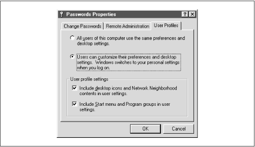The next step is to select the Change Passwords tab on the left side of the dialog box. In order for Samba to allow you access to its shares, the username and password you give to Windows must match the account and password on the Samba server. If you don't have this tab in your dialog box, don't worry; it's probably because you haven't given yourself a Windows username and password yet. Simply click the OK button at the bottom and respond Yes when Windows asks to reboot. Then, skip down to the section entitled Section 3.1.1.2, Logging in for the first time.
3.1.1.1 Changing the Windows password
After selecting the Change Passwords tab, the dialog box in Figure 3.2 will appear.
Figure 3.2: The Change Passwords tab
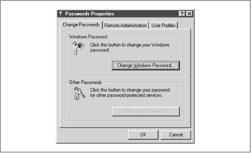Select the Change Windows Password button. The Change Windows Password dialog box should appear, as shown in Figure 3.3. From here, you can change your password to match the password of the account on the Samba server through which you intend to log in.
Figure 3.3: The Change Windows Password dialog box
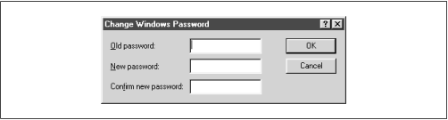3.1.1.2 Logging in for the first time
If you didn't have a Change Passwords tab in the Passwords Properties window, then after Windows has finished rebooting, it will ask you to log in with a username and a password. Give yourself the same username and password that you have on the Samba server. After confirming your new username and password, or if you already have one, Windows should ask you if you want to have a profile, using the dialog shown in Figure 3.4.
Figure 3.4: Windows Networking profiles
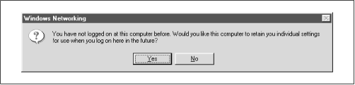Answer Yes, upon which Windows will create a separate profile and password file for you and save a copy of your password in the file. Now when you connect to Samba, Windows will send its password, which will be used to authenticate you for each share. We won't worry about profiles for the moment; we'll cover them in Chapter 6, Users, Security, and Domains. We should point out, however, that there is a small security risk: someone can steal the password file and decrypt the passwords because it's weakly encrypted. Unfortunately, there isn't a solution to this with Windows 95/98. In Windows 2000 (NT 5.0), the password encryption should be replaced with a much better algorithm.
3.1.2 Setting Up the Network
The next thing we need to do is make sure we have the TCP/IP networking protocol set up correctly. To do this, double-click on the Network icon in the Control Panel. You should see the network configuration dialog box, as shown in Figure 3.5.
Figure 3.5: The Windows 95/98 Network panel
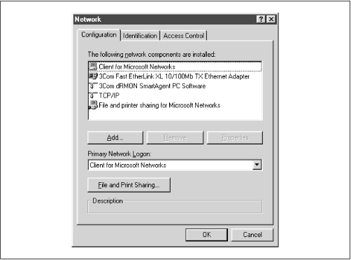Microsoft networking works by binding specific protocols, such as IPX or TCP/IP, to a specific hardware device, such as an Ethernet card or a dialup connection. By routing a protocol through a hardware device, the machine can act as a client or server for a particular type of network. For Samba, we are interested in binding the TCP/IP protocol through a networking device, making the machine a client for Microsoft networks. Thus, when the dialog box appears, you should see at least the Client for Microsoft Networks component installed on the machine, and hopefully a networking device (preferably an Ethernet card) bound to the TCP/IP protocol. If there is only one networking hardware device, you'll see the TCP/IP protocol listed below that device. If it appears similar to Figure 3.5, the protocol is bound to the device.
You may also see "File and printer sharing for Microsoft Networks," which is useful. In addition, you might see NetBEUI or Novell Networking, which are standard with Windows installations but undesirable when TCP/IP is running. Remove NetBEUI if you possibly can - it's unnecessary and makes debugging Windows browsing difficult. If you don't have any Novell servers on your network, you can remove Novell (IPX/SPX) as well.
3.1.2.1 Adding TCP/IP
If you don't see TCP/IP listed at all, you'll need to install the protocol. If you already have TCP/IP, skip this section, and continue with the section Section 3.1.3, Setting Your Name and Workgroup, later in this chapter.
Installing TCP/IP isn't difficult since Microsoft distributes its own version of TCP/IP for free on their installation CD-ROM. You can add the protocol by clicking on the Add button below the component window. Indicate that you wish to add a specific protocol by selecting Protocol and clicking Add... on the following dialog box, which should look similar to Figure 3.6.
Figure 3.6: Selecting a protocol to install
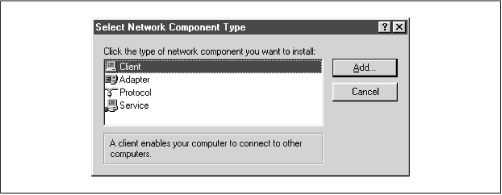After that, select the protocol TCP/IP from manufacturer Microsoft, as shown in Figure 3.7, then click OK. After doing so, you will be returned to the network dialog. Click OK there to close the dialog box, upon which Windows will install the necessary components from disk and reboot the machine.
Figure 3.7: Selecting a protocol to install
3.1.2.2 Configuring TCP/IP
If you have more than one networking device (for example, both an Ethernet card and a dialup networking modem), each appropriate hardware device should be "linked" to the TCP/IP protocol with an arrow, as shown in Figure 3.8. Select the TCP/IP protocol linked to the networking device that will be accessing the Samba network. When it is highlighted, click the Properties button.
Figure 3.8: Selecting the correct TCP/IP protocol
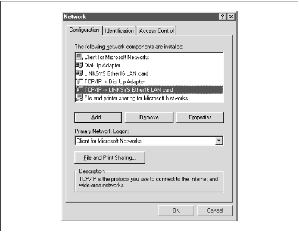After doing so, the TCP/IP Properties panel for that device is displayed, as shown in Figure 3.9.
Figure 3.9: STCP/IP Properties panel
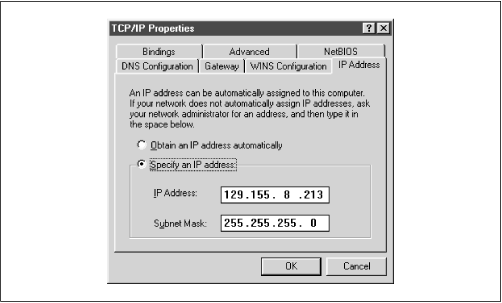There are seven tabs near the top of this panel, and you will need to configure four of them:
3.1.2.3 IP Address tab
The IP Address tab is shown in Figure 3.9. Press the "Specify an IP address" radio button and enter the client's address and subnet mask in the space provided. You or your network manager should have selected an address for the machine. The values should place the computer on the same subnet as the Samba server. For example, if the server's address is 192.168.236.86, and its network mask 255.255.255.0, you might use address 192.168.236.10 (if it is available) for the Windows 98 computer, along with the same netmask as the server. If you already use DHCP on your network to provide IP addresses to Windows machines, select the "Obtain an IP address automatically" button.
3.1.2.4 DNS Configuration tab
Domain Name Service (DNS) is responsible for translating Internet computer names such as hobbes.example.com into machine-readable IP addresses such as 192.168.236.10. There are two ways to accomplish this on a Windows 98 machine: you can specify a server to do the translation for you or you can keep a local list of name/address pairs to refer to.
Networks that are connected to the Internet typically use a server, since the hosts files required would otherwise be huge. For an unconnected LAN, the list of possible hosts is small and well-known and might be kept on a Unix machine in the /etc/hosts file. If you are in doubt as to whether a DNS server is being used, or what its address might be, look at the file /etc/resolv.conf on your Unix servers. Any machine using DNS will have this file, which looks like:
#resolv.conf domain example.com nameserver 127.0.0.1 nameserver 192.168.236.20In the example shown, the second
nameserverline in the list contains the IP address of another machine on the local network: 192.168.236.20. It's a good candidate for a DNS server.[1][1] We can disqualify the other address because every Unix machine has a localhost address of 127.0.0.1 whether it is connected to a network or not. This address is required for some system tools to operate correctly.
You must type the correct IP address of one or more DNS servers (note that you cannot use its Internet name, such as dns.oreilly.com) into the appropriate field in Figure 3.10. Be sure not to use 127.0.0.1 - that will never be the correct DNS server address!
Try to select addresses on your own network. Any name servers listed in /etc/resolv.conf should work, but you'll get better performance by using a server nearby. (If you don't find /etc/resolv.conf files on your Unix machines, just disable DNS until you can find the address of at least one DNS server.) Let's assume you only have one DNS server, and its address is 192.168.236.20. Click the Enable DNS radio button, as shown in Figure 3.10, and add the server's address to the top DNS Server Search Order field.
Figure 3.10: The DNS Configuration tab
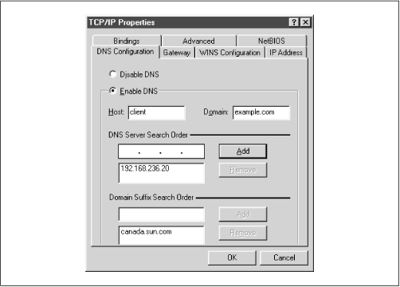Also, provide the name of the Windows 95/98 machine and the Internet domain you're in. You can safely ignore the Domain Suffix Search Order field for anything related to Samba.
3.1.2.5 WINS Configuration tab
WINS is the Windows Internet Name Service, its version of a NetBIOS name server. If you've enabled WINS on Samba, you must tell Windows the Samba server's address. If you are using WINS servers that are entirely Windows NT, enter each of them here as well. The dialog box shown after selecting the WINS Configuration tab is shown in Figure 3.11.
Figure 3.11: The WINS Configuration tab
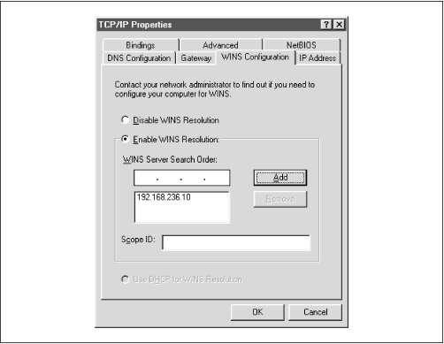WARNING: Do not mix a Samba WINS server and a Windows NT server as a primary/backup combination in the WINS dialog. Because the two cannot replicate their databases, this will cause name resolution to perform incorrectly.
From here, select Enable WINS Resolution and enter the WINS server's address in the space provided, then press Add. Do not enter anything in the Scope ID field.
3.1.2.6 Hosts files
If you do not have either DNS or WINS, and you don't wish to use broadcast resolution, you'll need to provide a table of IP addresses and hostnames, in the standard Unix /etc/hosts format. On a Windows machine, this goes in \WINDOWS\HOSTS under whichever drive you installed Windows on (typically C:\). A sample host file follows:
# 127.0.0.1 localhost 192.168.236.1 escrime.example.com escrime 192.168.236.2 riposte.example.com riposte 192.168.236.3 wizzin.example.com wizzin 192.168.236.4 touche.example.com touche 192.168.236.10 hobbes.example.com hobbesYou can copy this file directly from any of your Unix machines' /etc/hosts; the format is identical. However, you should only use hosts files in Windows as a last resort for name resolution.
3.1.2.7 Check the bindings
The final tab to look at is Bindings, as shown in Figure 3.12.
Figure 3.12: The Bindings tab
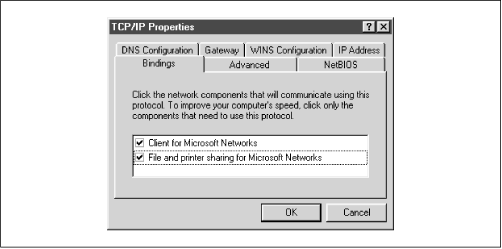You should have a check beside Client for Microsoft Networks, indicating that it's using TCP/IP. If you have "File and printer sharing for Microsoft Networks" in the dialog, it should also be checked, as shown in the figure.
3.1.3 Setting Your Name and Workgroup
Finally, press the OK button in the TCP/IP configuration panel, and you'll be taken back to the Network Configuration screen. Then select the Identification tab, which will take you to the dialog box shown in Figure 3.13.
Figure 3.13: The Identification tab
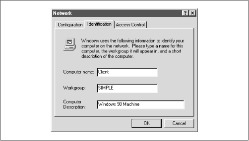Here, for the second time, set your machine's name. This time, instead of your DNS hostname and domain, you're setting your NetBIOS name. However, it is best to make this the same as your hostname. Try not to make a spelling mistake: it can be very confusing to configure a machine if TCP thinks it's
fredand SMB thinks itsferd!You also set your workgroup name here. In our case, it's SIMPLE, but if you used a different one in Chapter 2, Installing Samba on a Unix System, when creating the Samba configuration file, use that here as well. Try to avoid calling it WORKGROUP or you'll be in the same workgroup as every unconfigured (or ill-configured) machine in the world.
3.1.4 Accessing the Samba Server
Click on the OK button to complete the configuration; you will need to reboot in order for your changes to take effect.
Now for the big moment. Your Samba server is running, and you have set up your Windows 95/98 client to communicate with it. After rebooting, log in and double-click the Network Neighborhood icon on the desktop. You should see your Samba server listed as a member of the workgroup, as shown in Figure 3.14.
Figure 3.14: Windows Network Neighborhood
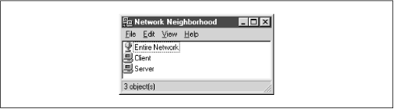Double-clicking the server name will show the resources that the server is offering to the network, as shown in Figure 3.15 (in this case a printer and the test directory).
Figure 3.15: Shares on Server
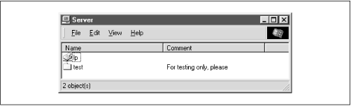WARNING: If you are presented with a dialog requesting the password for a user
IPC$, then Samba did not accept the password that was sent from the client. In this case, the username and the password that were created on the client side must match the username/password combination on the Samba server. If you are using Windows 98 or Windows NT Service Pack 3 or above, this is probably because the client is sending encrypted passwords instead of plaintext passwords. You can remedy this situation by performing two steps on the Samba server. First, add the following entry to the[global]section of your Samba configuration file:encrypt password=yes. Second, find the smbpasswd program on the samba server (it is located in /usr/local/samba/bin by default) and use it to add an entry to Samba's encrypted password database. For example, to add usersteveto Samba's encrypted password database, typesmbpasswd -a steve. The first time you enter this password, the program will output an error message indicating that the password database does not exist; it will then create the database, which is typically stored in /usr/local/samba/private/smbpasswd.If you don't see the server listed, start Windows Explorer (not Internet Explorer!) and select Map Network Drive from the Tools menu. This will give you a dialog box into which you can type the name of your server and the share
testin the Windows UNC format: \\server\test, like we did in the first chapter. This should attempt to contact the Samba server and its temporary share. If things still aren't right, go to Chapter 9, Troubleshooting Samba, for troubleshooting assistance.
|
|
 |
|
| 2.6 Testing the Samba Daemons |
 | 3.2 Setting Up Windows NT 4.0 Computers |
© 1999, O'Reilly & Associates, Inc.